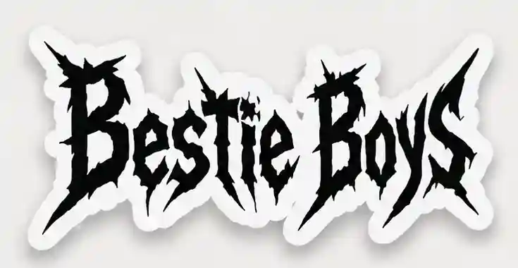

CUSTOM ART
Your pet is rebuilt into the artwork, not pasted onto a template.

Start with your petCUSTOM PET ART / UNDERGROUND MERCH
Send clear photos of your pet. Pick an underground style. BestieBoys turns them into original artwork that looks like it belongs on a real band shirt.
Then the design is built for the format you want: tees, longsleeves, hoodies, caps, stickers or prints.


Your pet is rebuilt into the artwork, not pasted onto a template.
Typography, texture and composition change with the style you choose.
The layout is adapted for the actual shirt, hoodie, cap, sticker or print.
HOW IT WORKS
Front, side and full-body shots if you have them.
Choose the underground visual world you want.
Your pet, lettering and merch format become one design.
PICK A DIRECTION
Start with one of these. The full development library has more, but you do not need to understand an archive before choosing a look.

Gothic • ritual • heavy
Medical • rotten • chaotic

Photocopied • dense • hostile
Raw • red • overloaded
WHAT YOU CAN MAKE
These boards show how the artwork expands across different garment shapes instead of using the same placement everywhere.


THE TRANSFORMATION
The original photograph gives us likeness and personality. The finished piece gives it a scene, typography and merch identity.


NO GENERIC PET MERCH
Start with the photos. Pick the scene and format next.
START WITH YOUR PET →